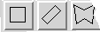
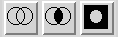
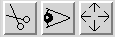

|  |
This group of buttons selects the basic shapes. |
|  |
These buttons control how regions are combined. By default a new region is created, and previous regions discarded. Selecting the left button in the group will cause shapes to be accumulated (OR). The middle button creates a region from the overlap (AND). The right button takes the region outside the specified shape (NOT). Note that the latter button does not cause existing regions to be inverted, but applies to shapes defined after it is selected. |
|  |
From left to right these buttons perform the following actions: remove the current region from the image by setting quality to IGNORE, show the outline of the current region, reselect the whole image as the current region. |